Predicting splicing effects with MTSplice
Last updated: 2022-09-13
Checks: 5 2
Knit directory: funcFinemapping/
This reproducible R Markdown analysis was created with workflowr (version 1.7.0). The Checks tab describes the reproducibility checks that were applied when the results were created. The Past versions tab lists the development history.
The R Markdown is untracked by Git. To know which version of the R
Markdown file created these results, you’ll want to first commit it to
the Git repo. If you’re still working on the analysis, you can ignore
this warning. When you’re finished, you can run
wflow_publish to commit the R Markdown file and build the
HTML.
Great job! The global environment was empty. Objects defined in the global environment can affect the analysis in your R Markdown file in unknown ways. For reproduciblity it’s best to always run the code in an empty environment.
The command set.seed(20210404) was run prior to running
the code in the R Markdown file. Setting a seed ensures that any results
that rely on randomness, e.g. subsampling or permutations, are
reproducible.
Great job! Recording the operating system, R version, and package versions is critical for reproducibility.
Nice! There were no cached chunks for this analysis, so you can be confident that you successfully produced the results during this run.
Using absolute paths to the files within your workflowr project makes it difficult for you and others to run your code on a different machine. Change the absolute path(s) below to the suggested relative path(s) to make your code more reproducible.
| absolute | relative |
|---|---|
| ~/projects/funcFinemapping/docs/assets/splicing/compare_MAFs_mtsplice_scz_top1-2.png | docs/assets/splicing/compare_MAFs_mtsplice_scz_top1-2.png |
| ~/projects/funcFinemapping/output/splicing/PTR_joint.pdf | output/splicing/PTR_joint.pdf |
Great! You are using Git for version control. Tracking code development and connecting the code version to the results is critical for reproducibility.
The results in this page were generated with repository version ab4948d. See the Past versions tab to see a history of the changes made to the R Markdown and HTML files.
Note that you need to be careful to ensure that all relevant files for
the analysis have been committed to Git prior to generating the results
(you can use wflow_publish or
wflow_git_commit). workflowr only checks the R Markdown
file, but you know if there are other scripts or data files that it
depends on. Below is the status of the Git repository when the results
were generated:
Ignored files:
Ignored: .ipynb_checkpoints/
Ignored: analysis/.Rhistory
Ignored: analysis/PTR_m6A.nb.html
Ignored: analysis/build_annotations_for_single_cell_data.nb.html
Ignored: analysis/lab4_prepare.nb.html
Ignored: analysis/ldsc_results.nb.html
Ignored: analysis/learn_archR.nb.html
Ignored: analysis/mtsplice_finemapping_results.nb.html
Ignored: analysis/results.nb.html
Ignored: analysis/snp_finemapping_results.nb.html
Ignored: analysis/splicing.nb.html
Ignored: analysis/susie_tutorial.nb.html
Untracked files:
Untracked: SCZ_pval_vs_MAF.png
Untracked: SNPs_categories,png
Untracked: SNPs_categories.png
Untracked: analysis/.ipynb_checkpoints/
Untracked: analysis/PTR_m6A.Rmd
Untracked: analysis/PTR_splicing_mtsplice.Rmd
Untracked: analysis/PTR_splicing_spliceAI.Rmd
Untracked: analysis/snp_finemapping_spliceAI_prior.Rmd
Untracked: bmi_locus1410.pdf
Untracked: code/.ipynb_checkpoints/
Untracked: code/.snakemake/
Untracked: code/Euro_LD_Chunks.RData
Untracked: code/Snakefile
Untracked: code/config.yaml
Untracked: code/environment.yml
Untracked: code/extract_mmsplice_predictions_bychr.R
Untracked: code/extract_mtsplice_maxPred.sh
Untracked: code/get_indiv_annotation_from_predictions.R
Untracked: code/heatmap_torus_enrichment.ipynb
Untracked: code/ldsc.log
Untracked: code/ldsc.results
Untracked: code/ldsc_regression.sh
Untracked: code/make_joint_annotations.R
Untracked: code/make_plots.R
Untracked: code/out/
Untracked: code/plot_torus_enrichment.R
Untracked: code/prepare_torus_inputs.R
Untracked: code/run_ldsc.sh
Untracked: code/run_ldsc_with_bed.sh
Untracked: code/run_ldsc_with_bed_v2.sh
Untracked: code/run_susie.R
Untracked: code/run_susie_in_parallel.R
Untracked: code/run_torus.sh
Untracked: code/run_torus/
Untracked: code/sctype/
Untracked: code/split_vcf.sh
Untracked: code/test_mtsplice.txt.gz
Untracked: code_backup/
Untracked: data/ScTypeDB_full.xlsx
Untracked: data/compare_spliceai_and_mmsplice.RData
Untracked: data/hg19_gtf_genomic_annots_ver2.gr.rds
Untracked: data/mmsplice_mtsplice_cutoffs.M5.txt
Untracked: data/mmsplice_mtsplice_cutoffs.txt
Untracked: data/num_overlaps_finemapped_SNPs_and_ctcf.txt
Untracked: data/qqplot_SNPs_high_spliceAI.png
Untracked: data/qqplot_SNPs_high_spliceAI_scores_SCZ.png
Untracked: data/qqplot_SNPs_high_spliceAI_scores_aFib.png
Untracked: data/qqplot_SNPs_high_spliceAI_scores_allergy.png
Untracked: data/spliceAIandMAF.txt.gz
Untracked: data/torus_enrichment_novel_annot.est
Untracked: data/torus_joint_enrichment.est
Untracked: data/torus_joint_refined_enrichment.est
Untracked: enhancer_gene_feature.rmd
Untracked: fig1_panels.pdf
Untracked: fig2.pdf
Untracked: fig_panel2.pdf
Untracked: gene_mapping.pdf
Untracked: output/AAD/GMP_merge_stats.txt
Untracked: output/AAD/Wang2020_joint.results
Untracked: output/AAD/Wang2020_joint_T.results
Untracked: output/AAD/Wang2020_joint_tissueResT.results
Untracked: output/AAD/allergy/Ulirsch2019/GMP_merge_compare_old.est
Untracked: output/AAD/allergy/Ulirsch2019_disjoint_snps.sumstats
Untracked: output/AAD/allergy/Wang2020_T_subsets.est
Untracked: output/AAD/allergy/Wang2020_T_subsets_indiv.est
Untracked: output/AAD/allergy/Wang2020_T_tissueRes.est
Untracked: output/AAD/allergy/Wang2020_joint_T.results
Untracked: output/AAD/allergy/Wang2020_joint_tissueResT.results
Untracked: output/AAD/allergy/Wang2020_tissueResT.est
Untracked: output/AAD/allergy/torus_enrichment_CD4.est
Untracked: output/AAD/allergy/torus_enrichment_CD8.est
Untracked: output/AAD/allergy/torus_enrichment_non_tissueRes_T.est
Untracked: output/AAD/allergy/torus_enrichment_tissueMigraT.est
Untracked: output/AAD/allergy/torus_enrichment_tissueResT_C6.est
Untracked: output/AAD/allergy/torus_enrichment_tissueResT_C8.est
Untracked: output/AAD/allergy/torus_enrichment_tissueRes_T.est
Untracked: output/AAD/allergy/torus_enrichment_tissueResident_T_cells.est
Untracked: output/AAD/asthma_adult/Ulirsch2019/CD4_compare_old.est
Untracked: output/AAD/asthma_adult/Ulirsch2019/CD8_compare_old.est
Untracked: output/AAD/asthma_adult/Ulirsch2019/GMP_merge_compare_old.est
Untracked: output/AAD/asthma_adult/Wang2020_T_subsets.est
Untracked: output/AAD/asthma_adult/Wang2020_T_subsets_indiv.est
Untracked: output/AAD/asthma_adult/Wang2020_T_tissueRes.est
Untracked: output/AAD/asthma_adult/Wang2020_joint_T.results
Untracked: output/AAD/asthma_adult/Wang2020_joint_tissueResT.results
Untracked: output/AAD/asthma_adult/torus_enrichment_CD4.est
Untracked: output/AAD/asthma_adult/torus_enrichment_CD8.est
Untracked: output/AAD/asthma_adult/torus_enrichment_non_tissueRes_T.est
Untracked: output/AAD/asthma_adult/torus_enrichment_tissueMigraT.est
Untracked: output/AAD/asthma_adult/torus_enrichment_tissueResT_C6.est
Untracked: output/AAD/asthma_adult/torus_enrichment_tissueResT_C8.est
Untracked: output/AAD/asthma_adult/torus_enrichment_tissueRes_T.est
Untracked: output/AAD/asthma_adult/torus_enrichment_tissueResident_T_cells.est
Untracked: output/AAD/asthma_child/CD4_compare.est
Untracked: output/AAD/asthma_child/CD8_compare.est
Untracked: output/AAD/asthma_child/Ulirsch2019/GMP_merge_compare_old.est
Untracked: output/AAD/asthma_child/Ulirsch2019/torus_enrichment_CD4.est
Untracked: output/AAD/asthma_child/Ulirsch2019/torus_enrichment_CD8.est
Untracked: output/AAD/asthma_child/Wang2020_T_subsets.est
Untracked: output/AAD/asthma_child/Wang2020_T_subsets_indiv.est
Untracked: output/AAD/asthma_child/Wang2020_T_tissueRes.est
Untracked: output/AAD/asthma_child/Wang2020_joint_T.results
Untracked: output/AAD/asthma_child/Wang2020_joint_tissueResT.results
Untracked: output/AAD/asthma_child/torus_enrichment_CD4.est
Untracked: output/AAD/asthma_child/torus_enrichment_CD8.est
Untracked: output/AAD/asthma_child/torus_enrichment_non_tissueRes_T.est
Untracked: output/AAD/asthma_child/torus_enrichment_tissueMigraT.est
Untracked: output/AAD/asthma_child/torus_enrichment_tissueResT_C6.est
Untracked: output/AAD/asthma_child/torus_enrichment_tissueResT_C8.est
Untracked: output/AAD/asthma_child/torus_enrichment_tissueRes_T.est
Untracked: output/AAD/asthma_child/torus_enrichment_tissueResident_T_cells.est
Untracked: output/LDL_ukb_L10.gif
Untracked: output/LDL_ukb_L10.pdf
Untracked: output/background_SNPs_annotated_percent.txt
Untracked: output/ldsc
Untracked: output/locus_1452.gif
Untracked: output/locus_1452.pdf
Untracked: output/spliceAI_vs_MAF.png
Untracked: output/splicing/.ipynb_checkpoints/
Untracked: output/splicing/PTR_across_traits_annotations.results
Untracked: output/splicing/PTR_joint.pdf
Untracked: output/splicing/PTR_joint.png
Untracked: output/splicing/QQplot_mmsplice.png
Untracked: output/splicing/QQplot_mmsplice_top15.png
Untracked: output/splicing/QQplot_mmsplice_vs_mtsplice.png
Untracked: output/splicing/QQplot_mmsplice_vs_mtsplice_SCZ.png
Untracked: output/splicing/TSplice_scores_distribution.png
Untracked: output/splicing/aFib_joint_comparison.pdf
Untracked: output/splicing/allergy_joint_comparison.pdf
Untracked: output/splicing/header.txt
Untracked: output/splicing/m6A_enrichment_across_traits.pdf
Untracked: output/splicing/mmsplice_vs_mtsplice_AA_heart.png
Untracked: output/splicing/mmsplice_vs_mtsplice_Hypothalamus_brain.png
Untracked: output/splicing/mmsplice_vs_mtsplice_LV_heart.png
Untracked: output/splicing/mmsplice_vs_mtsplice_across_tissues.png
Untracked: output/splicing/mtsplice_enrichment_across_traits.pdf
Untracked: output/splicing/prior/
Untracked: output/splicing/scz_PTR_annotations.results
Untracked: output/splicing/scz_joint_comparison.pdf
Untracked: output/splicing/scz_neuOCR_m6a_DMR.results
Untracked: output/splicing/scz_spliceAI0.03_hist.png
Untracked: output/splicing/scz_spliceAI0.03_scatterplot.png
Untracked: output/splicing/scz_spliceai_binary0.03.results
Untracked: output/splicing/summarizing_aFib_PIPs.pdf
Untracked: output/splicing/torus_afib_spliceai.est
Untracked: output/splicing/torus_annotations_spliceai0.01.txt.gz
Untracked: output/splicing/torus_annotations_spliceai0.03.txt.gz
Untracked: output/splicing/torus_annotations_spliceai0.05.txt.gz
Untracked: output/splicing/torus_annotations_spliceai0.07.txt.gz
Untracked: output/splicing/torus_annotations_spliceai0.1.txt.gz
Untracked: output/splicing/torus_annotations_spliceai0.2.txt.gz
Untracked: output/splicing/torus_annotations_spliceai9.txt.gz
Untracked: output/splicing/torus_enrichment_joint_scz_mtsplice0.6_hypothalamus-brain.est
Untracked: output/splicing/torus_enrichment_joint_scz_spliceAI.est
Untracked: output/splicing/torus_spliceai0.01.enrichment
Untracked: output/splicing/torus_spliceai0.03.enrichment
Untracked: output/splicing/torus_spliceai0.05.enrichment
Untracked: output/splicing/torus_spliceai0.07.enrichment
Untracked: output/splicing/torus_spliceai0.1.enrichment
Untracked: output/splicing/torus_spliceai0.2.enrichment
Untracked: output/splicing/torus_zscores.txt.gz
Untracked: output/torus
Untracked: panel_figure2.pdf
Untracked: test.txt
Unstaged changes:
Deleted: .Rprofile
Modified: analysis/index.Rmd
Modified: analysis/lab4_prepare.Rmd
Modified: analysis/ldsc_PTR_results.Rmd
Deleted: output/AAD/Caldero2019_disjoint_snps.sumstats
Modified: output/AAD/allergy/Caldero2019_disjoint_snps.sumstats
Modified: output/AAD/allergy/Ulirsch2019/GMP_merge_compare.est
Modified: output/AAD/allergy/Wang2020_indiv.est
Modified: output/AAD/allergy/Wang2020_joint.results
Deleted: output/AAD/asthma/Caldero2019_diffDA_annot_percent.txt
Deleted: output/AAD/asthma/Caldero2019_stimuDA_annot_percent.txt
Deleted: output/AAD/asthma/celltype_specific_adult_lungs_torus.est
Deleted: output/AAD/asthma/diffe_adult_blood_torus.est
Deleted: output/AAD/asthma/joint_blood_immune_rest_vs_stimu.est
Deleted: output/AAD/asthma/joint_lung_vs_blood_immune_diff_torus.est
Deleted: output/AAD/asthma/joint_lung_vs_blood_immune_stimu_torus.est
Deleted: output/AAD/asthma/lung_clusters_dict.txt
Deleted: output/AAD/asthma/lung_clusters_info.txt
Deleted: output/AAD/asthma/stimu_adult_blood_torus.est
Deleted: output/AAD/asthma/torus_enrichment_all_rest.est
Deleted: output/AAD/asthma/torus_enrichment_all_stimulated.est
Deleted: output/AAD/asthma/zhang2021_annot_percent.txt
Deleted: output/AAD/asthma/zhang2021_cell_type_overlaps.txt
Deleted: output/AAD/asthma/zhang2021_peaks_per_celltype.txt
Modified: output/AAD/asthma_adult/Ulirsch2019/CD4_compare.est
Modified: output/AAD/asthma_adult/Ulirsch2019/CD8_compare.est
Deleted: output/AAD/asthma_adult/Ulirsch2019/GMP_merge_compare.est
Modified: output/AAD/asthma_adult/Wang2020_indiv.est
Modified: output/AAD/asthma_adult/Wang2020_joint.results
Modified: output/AAD/asthma_child/Ulirsch2019/GMP_merge_compare.est
Modified: output/AAD/asthma_child/Wang2020_indiv.est
Modified: output/AAD/asthma_child/Wang2020_joint.results
Deleted: output/asthma/Caldero2019_diffDA_annot_percent.txt
Deleted: output/asthma/Caldero2019_stimuDA_annot_percent.txt
Deleted: output/asthma/celltype_specific_adult_lungs_torus.est
Deleted: output/asthma/diffe_adult_blood_torus.est
Deleted: output/asthma/joint_lung_vs_blood_immune_diff_torus.est
Deleted: output/asthma/joint_lung_vs_blood_immune_stimu_torus.est
Deleted: output/asthma/lung_clusters_dict.txt
Deleted: output/asthma/lung_clusters_info.txt
Deleted: output/asthma/stimu_adult_blood_torus.est
Deleted: output/asthma/zhang2021_annot_percent.txt
Deleted: output/asthma/zhang2021_cell_type_overlaps.txt
Deleted: output/asthma/zhang2021_peaks_per_celltype.txt
Note that any generated files, e.g. HTML, png, CSS, etc., are not included in this status report because it is ok for generated content to have uncommitted changes.
These are the previous versions of the repository in which changes were
made to the R Markdown (analysis/PTR_splicing_mtsplice.Rmd)
and HTML (docs/PTR_splicing_mtsplice.html) files. If you’ve
configured a remote Git repository (see ?wflow_git_remote),
click on the hyperlinks in the table below to view the files as they
were in that past version.
| File | Version | Author | Date | Message |
|---|---|---|---|---|
| html | ab4948d | Jing Gu | 2022-09-13 | update MTSplice enrichment results |
| html | 171a0db | Jing Gu | 2022-08-17 | PTR_mtsplice |
| html | 10deffe | Jing Gu | 2022-08-15 | PTR_mtsplice |
| html | aa0b52d | Jing Gu | 2022-08-10 | PTR_mtsplice |
| html | 03e831f | Jing Gu | 2022-08-02 | PTR_splicing |
| html | abda215 | Jing Gu | 2022-08-02 | PTR_mtsplice |
Backgrounds
Post-transcriptional regulatory (PTR) processes have been implicated in development and diseases, however, it is largely unknown how genetic variations are mediated through PTR processes. We propose to annotate GWAS variants using both experimental measurements and computational predictions. With this prior knowledge, we can further identify most likely causal variants through fine-mapping and then link them to genes.
Several post-transcriptonal features will be explored:
- Alternative splicing
- RNA modification: m6A
- RNA binding
- Polyadenylation
Methods
MMSplice/MTSplice
A CNN method that aims to provide tissue-average or tissue-specific
combined with the average predictions on how likely a given variant can
alter splicing patterns based upon its sequence alone.
SNP effect predictions
The predictions of variant effects on post-transcriptional regulation
were performed on 10 million SNPs after some QC criteria, from 1000
genome phase 3 project.
Enrichment analysis
We first tested annotations one at a time using both TORUS and LDSC.Then
we jointly assessed a set of annotations.
Notably, we ran Torus without being limited to 1M hapmap SNPs. However, all analyses with LDSC were limited to 1M hapmap SNPs.
Results
Characteristics for MTSplice predictions
Out of 10M SNPs (MAF>=0.005), around 2000 SNPs have predicted score bigger than 2 or smaller than -2, which can be considered strong.
Compare MMSplice and MTSplice predictions
compare predictions
Table of prediction cutoffs
Understand the distribution of predicted scores wrt. MAFs
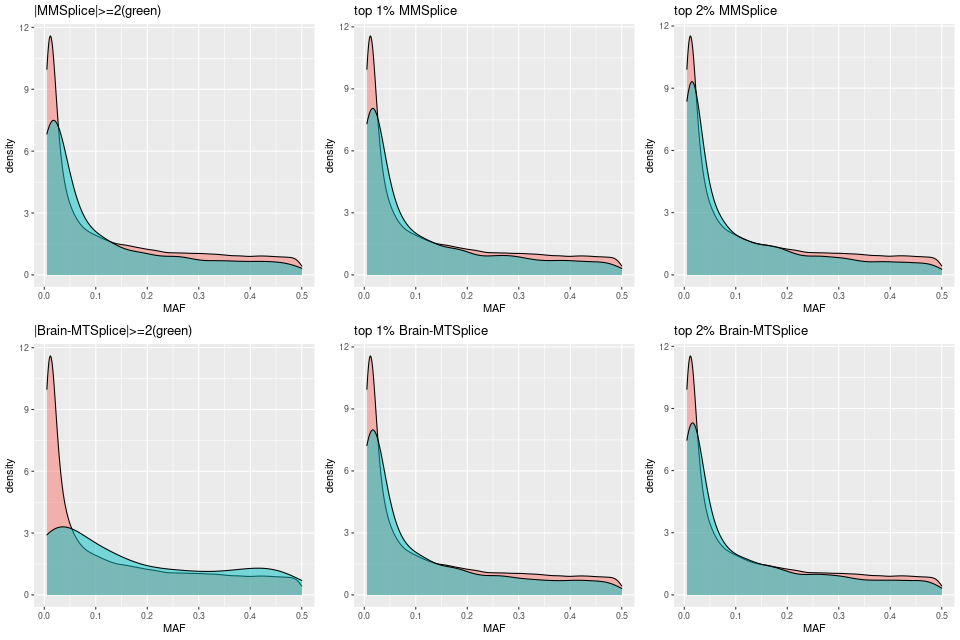 Examine MAF distribution for SNPs above or below threshold
QQ Plots - comparing SNPs within annotations and the rest
Color scheme: * red - tissue specific * blue - mmsplice * black - background
Top-left: SCZ gwas
Top-right and Down-left: aFib gwas; AA - Atrial Appendage; LV -Left
ventrical

QQ plots for both SCZ and aFib traits
Enrichment analysis on SCZ GWAS
Legends for the plots:
- y-axis - annotations(% of SNPs within annotations)
- x-axis - fold of enrichment
- label on the plot - percent of SNP heritability or enrichment p-value
- dashed line - no enrichment
Evaluate features with LDSC
The defined set of baseline annotations for running LDSC are coding, promoter, 3’UTR, 5’UTR, each with a 500-bp extended region.
MMSplice vs. Brain-specific MTSplice

Fig 1.1 Enrichment of SCZ risk variants in tissue-average (mmsplice) versus Hypothalamus-specific predictions for altering splicing patterns (mtsplice) via LDSC.
The variants with predicted score within top 5%, 10% and 15% were compared for their enrichment of risk variants between the two methods.Examine baseline annotations
test annotation:top 5% Hypothalamus-specific MTSplice predictions
Warning: Removed 1 rows containing missing values (geom_text).
Fig 2.1 Baseline enrichment of SCZ risk variants from LDSC.
Conditional on coding, introns, promoters and UTR annotations, MTSplice predictions specific to Hypothalams shows significant enrichment with SCZ risk variants. The enrichment estimate of MTSplice prediction was not affected much by whether or not including introns.Evaluate features with Torus
Individual run at different cutoffs
Fig 3.1 Enrichment of SCZ risk variants in individual annotation from Torus.
No baselines was provided for this run of analysis. For each of the two features, we ran torus at different cutoffs, from top 2% to top 5%.Joint run with other annotations
Sequentially adding annotation one at a time with the MTSplice prediction and the baseline set. 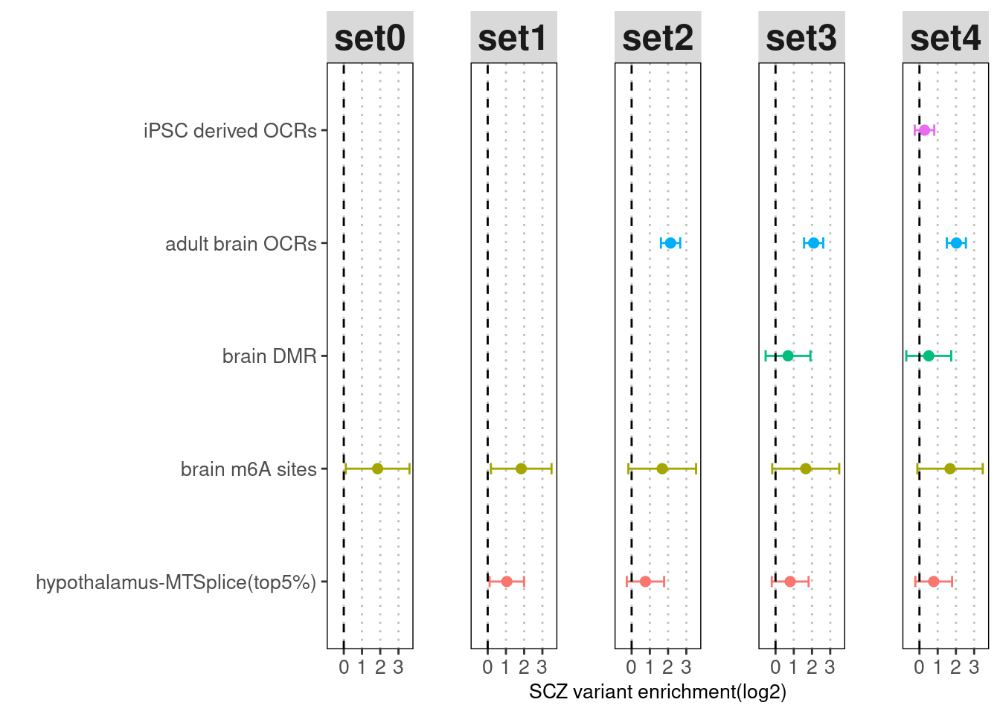
Fig 3.2 Enrichment of SCZ risk variants jointly run with baselines and annotations of interest added one after another via Torus.
After jointly run with adult brain OCRs, iPSC derived OCRs, differentially methylated sites across brain regions,and brain m6A sites, we observed slightly decrease in the enrichment of mtsplice predictions. The biggest decrease occurs when brain differentially methylated regions were added.Enrichment analysis on AFib GWAS
Evaluate features with LDSC
AFib
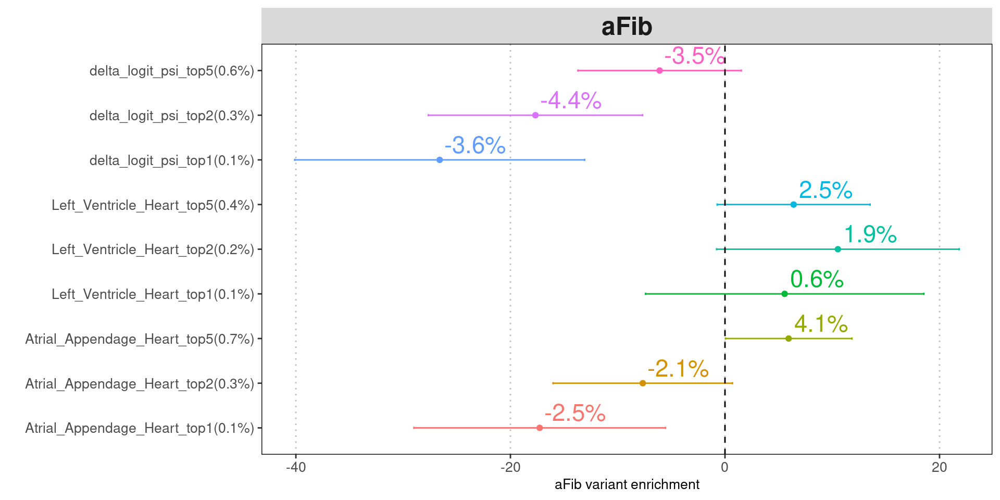
Fig 4.1a-d Enrichment of aFib risk variants jointly run with baselines with LDSC.
Top 5% MTSplice predictions for left ventricle and atrial appendage heart shows higher enrichment of risk variants with large standard errors.SCZ

LDL/HDL
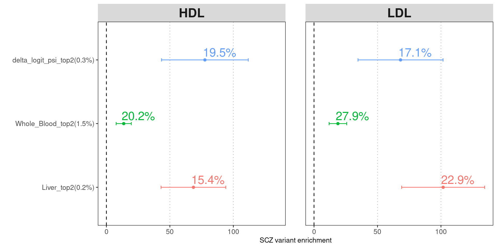
Asthma
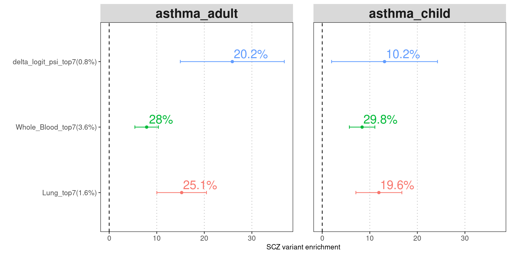
Evaluate features with Torus
Torus - with the baseline set SNPs with MAF>=0.05 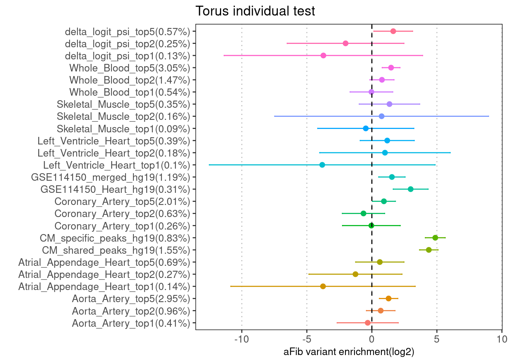
Fig 4.2 Torus individual test on 8M aFib GWAS SNPs
The Torus run shows top 5% of predictions average across tissues or specific to blood or aorta artery show significant enrichment.Torus joint analysis
TBD - top 5% predictions
Fig 4.2 Torus joint run on aFib GWAS SNPs with MAF>=5%
The Torus run shows top 5% of predictions average across tissues or specific to blood or aorta artery show significant enrichment.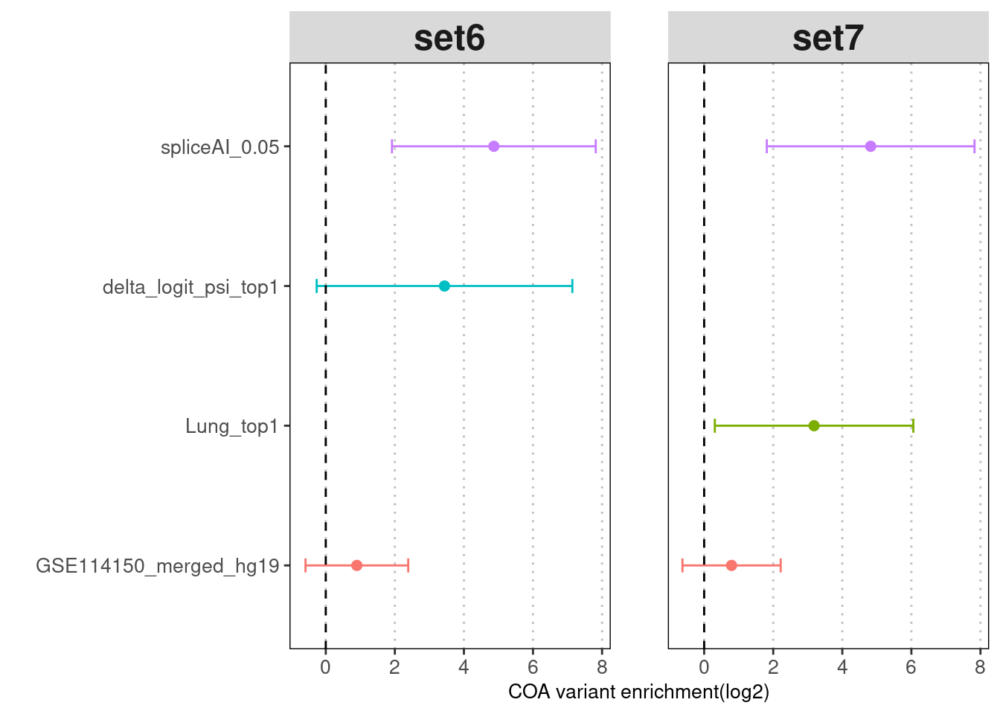
| Version | Author | Date |
|---|---|---|
| ab4948d | Jing Gu | 2022-09-13 |
Fig 4.3 Torus joint run on COA GWAS SNPs with MAF>=5%
SplcieAI at above 0.05 threshold shows enrichment after conditional on other annotations and baselines.Torus - Joint analysis with other annotations 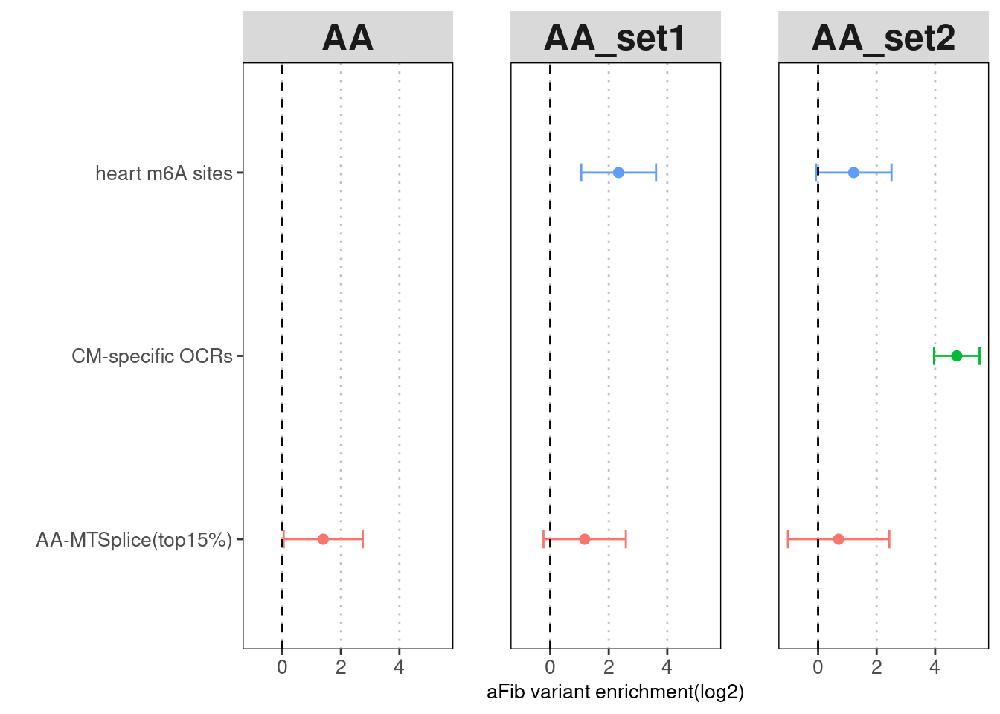
| Version | Author | Date |
|---|---|---|
| ab4948d | Jing Gu | 2022-09-13 |
Fig 4.4 Torus joint run with other types of annotations for AA-specific MTSplice predictions
With CM-specific OCRs and m6A sites, AA-MTSplice predictions no longer shows significant enrichment.Enrichment for tissue-agnostic predictions across multiple traits
Torus 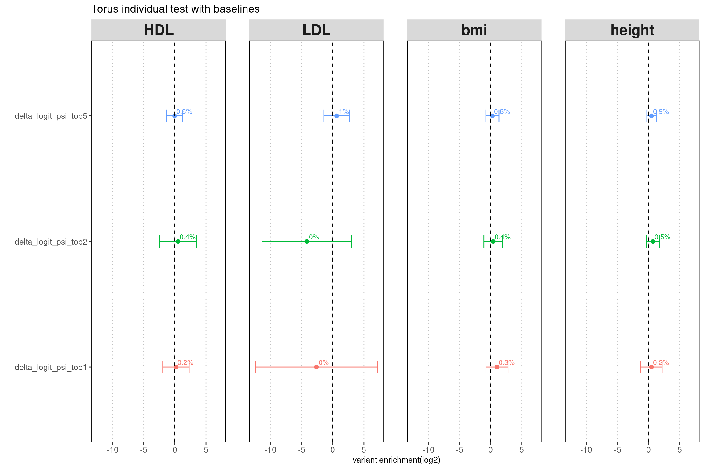
| Version | Author | Date |
|---|---|---|
| ab4948d | Jing Gu | 2022-09-13 |
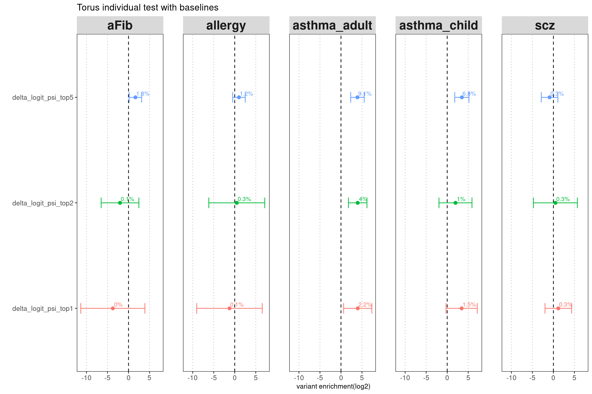
| Version | Author | Date |
|---|---|---|
| ab4948d | Jing Gu | 2022-09-13 |
Fig 5.1 Examine the enrichment of MMSplice-predicted SNPs that may alter splicing across traits
All traits do not display signal of enrichment except for AOA and COA.LDSC results across multiple traits
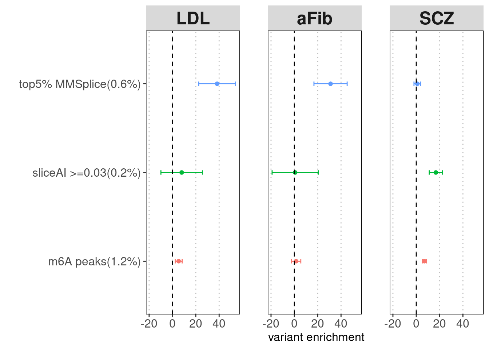
| Version | Author | Date |
|---|---|---|
| ab4948d | Jing Gu | 2022-09-13 |
Fig 5.2 Examine the enrichment of MMSplice predicted SNPs conditional on spliceAI predictions via LDSC
PTR enrichment conditional on transcriptional features
scz
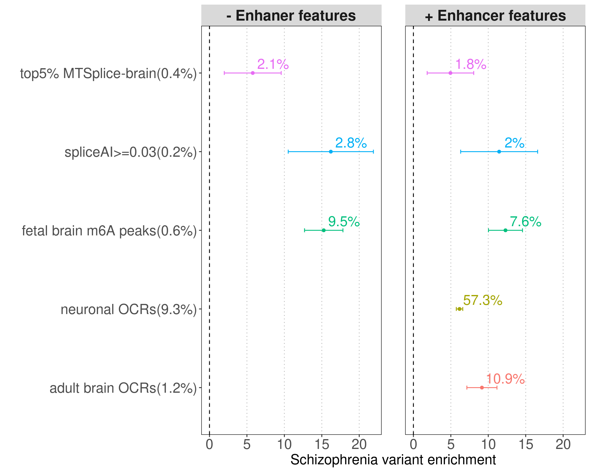
| Version | Author | Date |
|---|---|---|
| ab4948d | Jing Gu | 2022-09-13 |
Fig 6.1 Conditional on transcriptional effects, the enrichment of PTR features remains.
asthma
allergy

| Version | Author | Date |
|---|---|---|
| ab4948d | Jing Gu | 2022-09-13 |
aFib
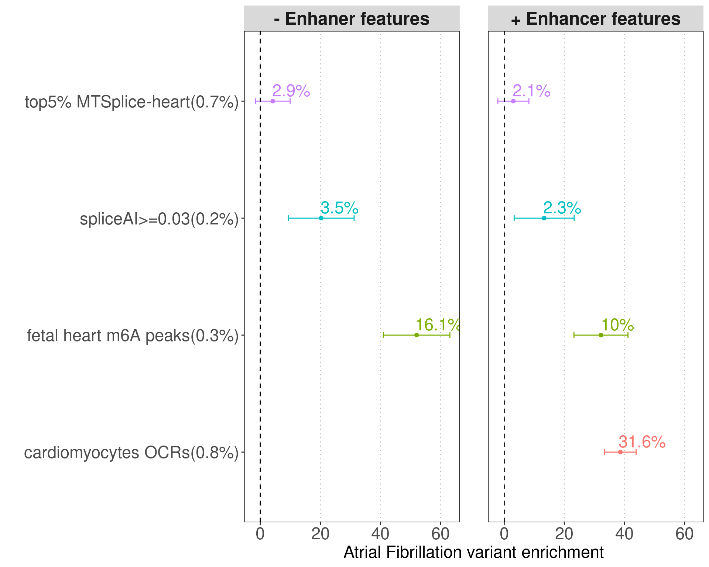
| Version | Author | Date |
|---|---|---|
| ab4948d | Jing Gu | 2022-09-13 |
sessionInfo()R version 4.2.0 (2022-04-22)
Platform: x86_64-pc-linux-gnu (64-bit)
Running under: CentOS Linux 7 (Core)
Matrix products: default
BLAS/LAPACK: /software/openblas-0.3.13-el7-x86_64/lib/libopenblas_haswellp-r0.3.13.so
locale:
[1] LC_CTYPE=en_US.UTF-8 LC_NUMERIC=C LC_TIME=C
[4] LC_COLLATE=C LC_MONETARY=C LC_MESSAGES=C
[7] LC_PAPER=C LC_NAME=C LC_ADDRESS=C
[10] LC_TELEPHONE=C LC_MEASUREMENT=C LC_IDENTIFICATION=C
attached base packages:
[1] stats graphics grDevices utils datasets methods base
other attached packages:
[1] dplyr_1.0.9 gridExtra_2.3 data.table_1.14.2 ggplot2_3.3.6
loaded via a namespace (and not attached):
[1] Rcpp_1.0.8.3 pillar_1.7.0 compiler_4.2.0 bslib_0.3.1
[5] later_1.3.0 jquerylib_0.1.4 git2r_0.30.1 highr_0.9
[9] workflowr_1.7.0 tools_4.2.0 digest_0.6.29 gtable_0.3.0
[13] jsonlite_1.8.0 evaluate_0.15 lifecycle_1.0.1 tibble_3.1.7
[17] pkgconfig_2.0.3 rlang_1.0.2 DBI_1.1.2 cli_3.3.0
[21] rstudioapi_0.13 yaml_2.3.5 xfun_0.30 fastmap_1.1.0
[25] withr_2.5.0 stringr_1.4.0 knitr_1.39 generics_0.1.2
[29] fs_1.5.2 vctrs_0.4.1 sass_0.4.1 tidyselect_1.1.2
[33] grid_4.2.0 rprojroot_2.0.3 glue_1.6.2 R6_2.5.1
[37] fansi_1.0.3 rmarkdown_2.14 farver_2.1.0 purrr_0.3.4
[41] magrittr_2.0.3 whisker_0.4 scales_1.2.0 promises_1.2.0.1
[45] ellipsis_0.3.2 htmltools_0.5.2 assertthat_0.2.1 colorspace_2.0-3
[49] httpuv_1.6.5 labeling_0.4.2 utf8_1.2.2 stringi_1.7.6
[53] munsell_0.5.0 crayon_1.5.1